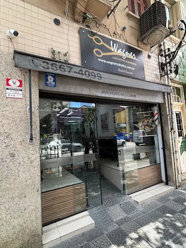

1987
O primeiro Studio
Foi aqui, em Santa Cecília, que começou a trajetória Wagner Cabeleireiros.
Desde 1987
O primeiro Studio Wagner Cabeleireiros, aberto em 1987 no bairro Santa Cecília, em São Paulo. Onde tudo começou.
Por que escolher o Studio I?
No Studio Santa Cecília, você encontra a experiência de uma história iniciada em 1987 e um atendimento pensado para você.
1987
Foi aqui, em Santa Cecília, que começou a trajetória Wagner Cabeleireiros.
01
Nossa equipe conversa com você para entender seu estilo e sua necessidade.
SP
Estamos na Rua Dr. Albuquerque Lins, 312, em Santa Cecília.
Studio I · Albuquerque Lins
Escolha o cuidado que você procura e fale conosco para confirmar disponibilidade e valores.



.jpeg)
.jpeg)
.jpeg)
Experiências no Studio I
Confira o que nossos clientes têm a dizer sobre o atendimento em Santa Cecília.
“Todos são ótimos profissionais. Cabeleireiros, manicures, podóloga e recepção. Atendimento com agendamento pontual e amistoso. Eu, meu marido e filho frequentamos há uns 13 anos e gostamos muito. A Sol é demais com tintura e luzes. Vale a pena!”
“Amei o corte da Solange! Super profissional, olhou e entendeu o meu cabelo, me sugeriu o que podia ser feito e fez melhor do que eu pedi! Maravilhosa!”
“Salão top. Corto com Carlinhos atualmente e sou cliente há mais de 25 anos.”
“Ótimos profissionais, bons preços e sempre atendimento top.”
“Profissionais competentes há vários anos no ramo e com preço justo, local de fácil acesso pertinho do metrô.”
Perguntas e dúvidas
Encontre respostas rápidas antes de agendar seu horário.
Recomendamos o agendamento para garantir o melhor horário e profissional. Fale conosco pelo WhatsApp para consultar a disponibilidade.
O Studio I oferece serviços para cabelo, barba, manicure, pedicure, depilação, maquiagem, penteados e podologia. Confirme a disponibilidade no agendamento.
Sim. Informe sua preferência no momento do agendamento e confirmaremos a disponibilidade do profissional escolhido.
As formas de pagamento e os valores podem variar conforme o serviço. Confirme essas informações diretamente com a unidade no momento do agendamento.
Estamos na Rua Dr. Albuquerque Lins, 312, no bairro Santa Cecília, em São Paulo. Consulte o mapa e o horário de funcionamento abaixo.
Fale com a gente pelo WhatsApp e marque seu horário em minutos.
Rua Dr. Albuquerque Lins, 312
Santa Cecília - São Paulo
Segunda-feira: 10:00 às 17:00
Terça a sábado: 09:00 às 19:00
Domingo e feriados: Fechado